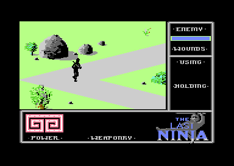
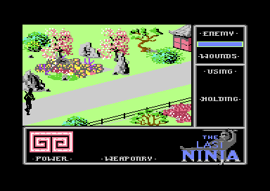

01 · The adventure
The last of his brotherhood
Armakuni survived because he was elsewhere. While he guarded a shrine, the shogun Kunitoki attacked the gathered ninja brotherhood and took its sacred scrolls. Armakuni returns to Lin Fen to recover them. The paths across the island have changed since his last visit.1

You guide him through fights and obstacles while collecting weapons and objects. A sword helps against a guard; another item may be needed farther along the route. The manual’s hints give the objects purposes without explaining every use. Reaching the scrolls takes more than surviving the next opponent.1
02 · The journey
From the Wastelands to the Inner Sanctum
The route passes through six chapters: the Wastelands, the Wilderness, Palace Gardens, the Dungeons, the Palace and the Inner Sanctum. Open paths and greenery give way to enclosed rooms. Each chapter brings another collection of backgrounds, and its own music for loading and play.

The Maps page lets you browse each chapter’s scenery and follow the room destinations stored in the game. It shows the backgrounds separately from the fighters and objects added during play.
03 · The makers
Building the island
System 3 released The Last Ninja for the Commodore 64 in 1987. John Twiddy programmed the released game, and Hugh Riley drew its graphics. The project had begun with a team in Hungary. Riley recalled travelling to Budapest before returning to London to work with Twiddy.2
The earlier team developed the Integrator, a tool for composing detailed backgrounds from smaller graphic pieces. In the recollections collected by Games That Weren’t, Mark Cale credits that work as essential to the game’s visual approach. The history of the finished game includes both the tool that made the scenery possible and the rewrite that made it playable.2
Memory shaped the fighting too. Twiddy told Retro Gamer that the team created more weapon animations than the C64 could hold. They chose a smaller set of moves and weapons to fit. The Graphics page shows the sprite bitmaps and how the game combines them into Armakuni’s poses.3
04 · The music
Music for the wait
Ben Daglish and Anthony Lees composed the music.4 The tape supplies a loading theme and a gameplay theme for each chapter. Waiting for the next area has its own soundtrack; the final load replaces that player with the music heard during play.
All twelve loading and gameplay tracks. The player runs the game’s own music code. You can compare a chapter’s two tracks without waiting for the cassette.
05 · The reception
Admired scenery and demanding jumps
C64-Wiki’s review index records a 94% score in the August 1987 issue of Zzap!64, and 9 out of 10 from Commodore User. Its list also includes a much less enthusiastic 61% from Happy Computer.4
The jumps remained a sore point for the programmer himself. Twiddy recalled that Cale had complained about their precision during development. He had wanted the ninja to fall if he missed a stone, rather than appear to stand in the air. Returning to the game years later changed his view: he accepted that the jumping sections were too difficult.3
06 · Inside the game
Explore the rules behind the island
F1 silences the music without restarting it. Shift and the plus or minus key change the speed of play. A room exit can send Armakuni to another screen or start the next chapter’s tape load. These details connect the controls you use to the way the game is built.
- Try the fighting controls, then compare jumps and their landing tests.
- Step an opponent’s decisions or try the pickup and puzzle gates.
- Follow a chapter through the tape loader and see what changes in memory.
- Explore all six chapters’ room pictures and their stored exits.
- Separate Armakuni’s two sprites and browse the sprite banks.
- Read the discoveries, including the speed keys and the Dungeons music bug.
07 · Sources
Instructions and recollections
- The original C64 manual, transcribed by the Last Ninja Archives: the story, controls and item hints.
- Games That Weren’t: Last Ninja V1: recollections from Hugh Riley, Mark Cale and members of the Hungarian team.
- John Twiddy’s interview in Retro Gamer issue 18, printed page 58: animation limits and the jumping sections.
- C64-Wiki: The Last Ninja: release details, music credits and its index of contemporary review scores. The scores above come from that index.